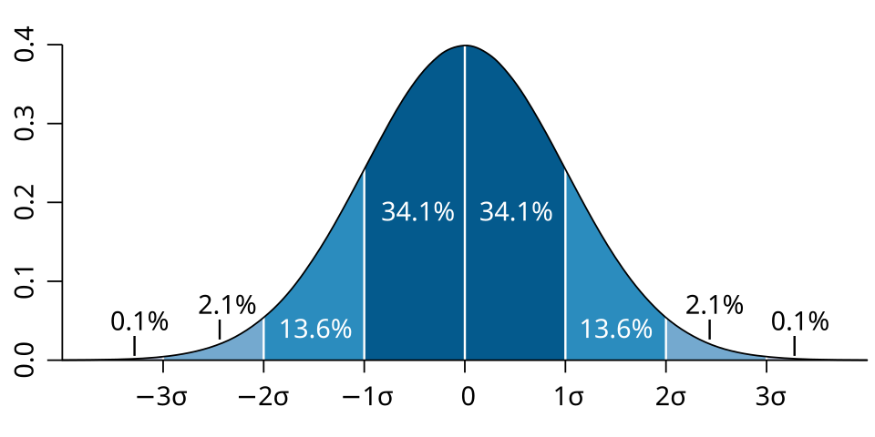
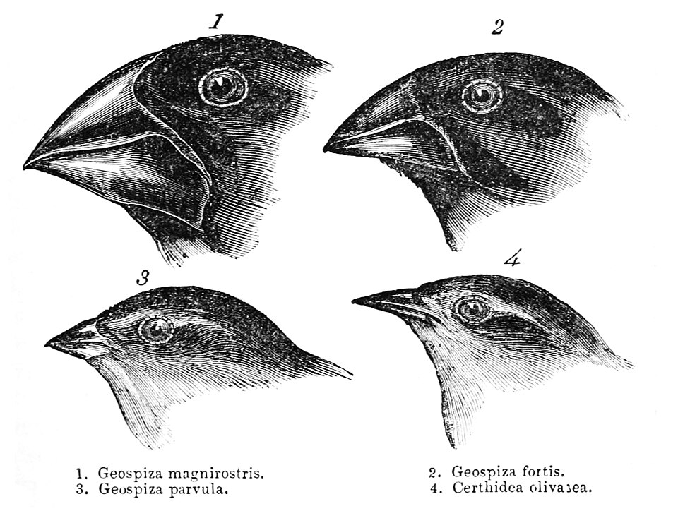

Chromosomes → genes → DNA → gametes → fertilisation → sex inheritance
1. 우리 몸 세포 하나하나의 핵 속에 염색체가 46개(23쌍) 들어 있다. 한 짝은 엄마에게서, 한 짝은 아빠에게서 왔다.
2. 염색체는 아주 긴 DNA 한 가닥이 감긴 것이고, 그 DNA의 짧은 구간 하나가 유전자다. 유전자 하나가 형질 하나를 조절한다. 크기 순서는 염색체 > 유전자 > DNA다.
3. 정자와 난자(생식세포 gamete)만 염색체가 23개다. 그래서 둘이 합쳐진(수정) 새 세포 접합자(zygote)가 다시 46개가 된다.
4. 23번째 쌍이 성염색체다. XX면 여자, XY면 남자. 난자는 항상 X, 정자만 X 또는 Y를 갖는다 → 아기 성별은 아빠 쪽 정자가 정한다.
5. 같은 유전자의 다른 버전을 대립유전자(allele)라고 한다. 자매인데도 눈 색이 다른 이유가 이것이다.
수업은 "세포에도 핵이 있고 원자에도 핵이 있는데 왜 이름이 같을까"라는 질문으로 시작한다. 답은 둘 다 큰 구조의 가운데에 있기 때문이고, 세포의 핵은 세포가 하는 일을 조절한다.
그다음이 이 단원의 뼈대다. 세포 → 핵 → 염색체 → 유전자 → DNA 순서로 러시아 인형처럼 들어 있다고 보면 된다. 염색체는 핵 속의 긴 DNA 실이고, 유전자는 그 실의 짧은 구간이며, DNA는 둘을 이루는 화학 물질이다.
여기서 꼭 짚고 갈 것이 하나 있다. 그림에서 흔히 보는 X자 모양 염색체는 평소 모습이 아니다. 세포가 나뉘기 직전에 자기를 한 번 복사해 둔 모습이라 X자로 보인다. 그 복사본 반쪽 하나를 염색분체(chromatid), 두 반쪽이 묶인 잘록한 허리를 동원체(centromere)라고 한다.
뒤쪽 슬라이드는 DNA로 들어간다. DNA는 이중나선이고 염기 A는 T와, C는 G와만 짝을 짓는다(상보적 염기쌍). 빈칸에 짝 염기를 채우는 활동과 틀린 곳 찾기 활동이 들어 있는데, 그 답을 보지 않고 말할 수 있으면 이 자료는 다 소화한 것이다.
먼저 왜 현미경으로 염색체를 못 봤나를 설명한다. 염색체는 세포가 분열할 때만 보이고, 그것도 염색약으로 물들여야 광학현미경에 나타난다. 그래서 평소 세포를 아무리 들여다봐도 안 보였던 것이다.
염색체 수는 종마다 정해져 있다. 사람 46개, 초파리 8개, 망고나무 40개. 사람은 같은 종류가 두 개씩 있고, 길이 순으로 번호를 붙여 1번이 가장 길다.
유전자 이야기로 넘어가면 숫자가 나온다. 1번 염색체에는 유전자가 약 2000개, 훨씬 짧은 15번에는 약 600개 있다. 15번의 두 유전자가 눈 색을 결정하는데, 유전자가 놓인 자리는 누구나 같지만 버전이 달라서 자매라도 눈 색이 다를 수 있다.
마지막이 DNA다. 염색체 하나가 엄청나게 긴 DNA 분자 하나이고, 그러니 유전자도 DNA로 되어 있다. 모양은 꼬인 사다리 = 이중나선이며, 유전자 하나가 약 2500번 꼬인 길이다. DNA는 1950년대에 발견됐다.
The nucleus of every cell contains threads called chromosomes.
모든 세포의 핵 안에는 염색체라고 부르는 실 모양 구조가 들어 있습니다.
Chromosomes were discovered in the nineteenth century, when microscopes first became powerful enough.
염색체는 현미경이 충분히 강력해진 19세기에 처음 발견되었습니다.
Chromosomes only become visible with a light microscope when a cell is dividing, and they must be coloured with a stain.
염색체는 세포가 분열할 때만 광학현미경으로 보이고, 염색약으로 색을 입혀야 보입니다.
Different species have different numbers: humans have 46, fruit flies have 8, mango trees have 40.
종마다 염색체 수가 다릅니다. 사람 46개, 초파리 8개, 망고나무 40개.
We have two of each kind of chromosome, and they are numbered by length — chromosome 1 is the longest.
염색체는 종류마다 두 개씩 있고, 길이 순으로 번호를 붙입니다. 1번이 가장 깁니다.
Just before a cell divides, each chromosome makes a copy of itself, so it looks like a cross shape.
세포가 분열하기 직전 각 염색체는 자기 복사본을 만들어서 십자 모양처럼 보입니다.
Each chromosome is made up of hundreds of different genes, arranged in a particular sequence.
염색체 하나는 수백 개의 유전자로 이루어져 있고, 정해진 순서로 배열돼 있습니다.
Each gene helps to control one particular characteristic of the organism.
각 유전자는 생물의 한 가지 형질을 조절하는 데 관여합니다.
Chromosome 1 has about 2000 genes; the much shorter chromosome 15 has about 600.
1번 염색체에는 약 2000개, 훨씬 짧은 15번에는 약 600개의 유전자가 있습니다.
Two genes on chromosome 15 help to determine eye colour. Everyone has them in the same place, but there are different versions — that is why two sisters can have different eye colours.
15번 염색체의 두 유전자가 눈 색깔 결정을 돕습니다. 위치는 모두 같지만 형태가 달라서, 자매라도 눈 색이 다를 수 있습니다.
Chromosomes are made of a chemical substance called DNA. Each chromosome is one enormously long DNA molecule.
염색체는 DNA라는 화학 물질로 되어 있습니다. 염색체 하나가 아주 긴 DNA 분자 하나입니다.
This means that genes are also made of DNA.
그러므로 유전자도 DNA로 되어 있습니다.
A DNA molecule is shaped like a twisted ladder. This shape is called a double helix.
DNA 분자는 꼬인 사다리 모양이며, 이 모양을 이중나선이라고 합니다.
One gene could be a length of DNA with about 2500 twists — far too small to see with a microscope.
유전자 하나는 약 2500번 꼬인 DNA 길이 정도이며, 현미경으로 볼 수 없을 만큼 작습니다.
DNA was first discovered in the 1950s. The DNA in a cell contains a complete set of instructions to make a working cell and a whole organism.
DNA는 1950년대에 처음 발견됐습니다. 세포 속 DNA는 세포와 생물 전체를 만드는 설명서 한 벌을 담고 있습니다.
Chromosome = a long thread of DNA in the nucleus, carrying many genes.
염색체 = 핵 속의 긴 DNA 실. 유전자를 많이 담고 있습니다.
Gene = a short section of that DNA which controls one characteristic.
유전자 = 그 DNA의 짧은 구간. 형질 하나를 조절합니다.
DNA = the chemical that both of them are made of.
DNA = 그 둘을 이루는 화학 물질입니다.
Remember the order from big to small: chromosome → gene → DNA.
큰 것부터 작은 것 순서로 외우세요. 염색체 → 유전자 → DNA.
그림 옆 빈칸을 아래 단어 상자(23, pairs, alleles, coiled, control…)에서 골라 채우는 과제다. 답의 뼈대는 이렇다.
염색체는 언제나 쌍(pairs)으로 있고 한 짝은 부모(parents) 각각에게서 온다. 사람 세포의 핵에는 23쌍이 있다. DNA가 감겨서(coiled) 염색체의 팔(arms)을 이룬다.
유전자는 염색체의 짧은 구간이고, 서로 다른 유전자가 머리색·눈색 같은 형질(characteristics)을 조절(control)한다. 같은 유전자의 다른 버전(different versions)은 유전자라 부르지 않고 대립유전자(alleles)라고 부른다 — 이 마지막 칸이 제일 많이 틀리는 곳이다.
단어 상자에 들어 있는 여섯 개는 chromatid, centromere, chromosomes, cell membrane, DNA, nucleus다. 바깥에서 안쪽 순서로 외우면 어떤 그림이 나와도 붙일 수 있다.
세포막(cell membrane) 안에 핵(nucleus)이 있고, 핵 안에 염색체(chromosomes)가 있다. 염색체 X자의 반쪽 하나가 chromatid, 두 반쪽을 묶은 잘록한 허리가 centromere, 그리고 그 실 자체를 이루는 물질이 DNA다.
수업 목표가 셋이라고 첫 장에 적혀 있다. 생식세포(gamete)가 무엇인지 말하기, 사람 생식세포가 왜 23개뿐인지 설명하기, 대립유전자(allele)를 같은 유전자의 다른 버전으로 설명하기.
정자와 난자는 생김새부터 반대다. 정자는 아주 작고 꼬리로 헤엄치며 수가 매우 많다. 난자는 크고 양분을 담고 있으며 스스로 움직이지 못한다. 슬라이드에 정자가 난자보다 1만 배 작다고 나온다.
수정 과정도 그림으로 나온다. 정자 머리의 첨체(acrosome)에서 효소가 나와 난자를 둘러싼 젤리막을 녹이고, 가장 먼저 뚫고 들어간 정자의 핵이 난자의 핵과 융합해 접합자(zygote)가 된다. 23 + 23 = 46이다.
마지막 두 장은 틀린 문장 찾기인데, 거기 나온 것이 그대로 시험 함정이다. 특히 "정자는 남자 염색체를, 난자는 여자 염색체를 갖는다"는 틀린 말이라고 슬라이드가 못박고 있다.
몸 세포는 46개인데 생식세포는 한 세트인 23개만 갖는다. 정자와 난자가 합쳐지는 것이 수정(fertilisation)이고, 그렇게 생긴 새 세포가 접합자(zygote)다. 사람은 누구나 이 세포 하나에서 시작했다.
23쌍 중 마지막 한 쌍이 성염색체다. XX면 여자, XY면 남자이고, Y는 X보다 훨씬 작다.
여기서 이 단원 최고의 시험 포인트가 나온다. 난자는 언제나 X를 갖는다. 정자만 X 또는 Y를 갖는다. 그러니 아기 성별을 정하는 쪽은 아빠다. X정자가 만나면 XX(딸), Y정자가 만나면 XY(아들)가 된다.
그리고 X정자와 Y정자의 수가 거의 반반이기 때문에 해마다 태어나는 남녀 수도 거의 같다. 마지막으로 유전(inheritance)은 부모가 자식에게 DNA(유전자를 담은 염색체)를 물려주는 것을 뜻한다.
Every human being began life as a single cell, formed when a sperm cell joined with an egg cell.
모든 사람은 정자와 난자가 합쳐져 생긴 세포 하나에서 시작했습니다.
Sperm cells and egg cells are specialised cells known as gametes. A sperm cell is the male gamete; an egg cell is the female gamete.
정자와 난자는 생식세포라 불리는 특수 세포입니다. 정자는 남성, 난자는 여성 생식세포입니다.
A sperm cell is very small, has a tail for swimming, only a small amount of cytoplasm, and a nucleus with 23 chromosomes.
정자는 아주 작고 헤엄치는 꼬리가 있으며, 세포질은 조금뿐이고 핵에 염색체 23개가 있습니다.
An egg cell is much bigger (about the size of a full stop), cannot move by itself, and its cytoplasm contains food reserves.
난자는 훨씬 크고(마침표 크기 정도) 스스로 움직이지 못하며, 세포질에 저장 양분이 들어 있습니다.
Both photographs in the book were taken with a scanning electron microscope.
교과서의 두 사진 모두 주사전자현미경으로 찍은 것입니다.
Human body cells have 46 chromosomes — two sets of 23. But gametes have only one set.
사람 몸 세포는 염색체 46개, 즉 23개짜리 두 세트입니다. 그런데 생식세포는 한 세트뿐입니다.
The joining of a sperm cell with an egg cell is called fertilisation.
정자와 난자가 합쳐지는 것을 수정이라고 합니다.
The head of the sperm cell enters the egg cell, then the two nuclei fuse together.
정자의 머리가 난자 안으로 들어간 뒤, 두 핵이 하나로 합쳐집니다.
The new cell that is formed is called a zygote, and it has 46 chromosomes — 23 from each parent.
이렇게 생긴 새 세포를 접합자(수정란)라 하며, 부모에게서 23개씩 받아 염색체 46개를 가집니다.
This single cell then divides over and over, eventually producing all the millions of cells in a human body.
이 세포 하나가 계속 분열해서 결국 몸의 수백만 개 세포를 모두 만듭니다.
The last pair of chromosomes are the sex chromosomes. They decide whether a person is male or female.
마지막 한 쌍이 성염색체입니다. 남성인지 여성인지를 결정합니다.
XX = female. XY = male. The Y chromosome is much smaller than the X chromosome.
XX = 여성, XY = 남성. Y염색체는 X염색체보다 훨씬 작습니다.
All egg cells contain one X chromosome. But a sperm cell can carry either an X or a Y.
모든 난자는 X염색체를 가집니다. 하지만 정자는 X 또는 Y 중 하나를 가집니다.
If an X-carrying sperm fertilises the egg → zygote is XX → a girl. If a Y-carrying sperm does → XY → a boy.
X를 가진 정자가 수정하면 XX → 딸. Y를 가진 정자면 XY → 아들.
The chance of each is about equal, which is why roughly equal numbers of boys and girls are born.
두 경우의 확률이 거의 같기 때문에 남아와 여아가 비슷한 수로 태어납니다.
So the baby's sex is decided by the father's sperm, not by the mother.
따라서 아기의 성별은 어머니가 아니라 아버지의 정자가 결정합니다.
Inheritance means passing on DNA — as chromosomes containing genes — from parents to offspring.
유전은 유전자를 담은 염색체 형태로 DNA를 부모에서 자손으로 물려주는 것입니다.
A baby's sex is determined because it inherits X or Y chromosomes from its parents — we call this sex inheritance.
아기의 성별은 부모에게서 X나 Y염색체를 물려받아 정해지며, 이를 성 유전이라 합니다.
All organisms also inherit other features from their parents, not only sex.
생물은 성별뿐 아니라 다른 특징들도 부모에게서 물려받습니다.
틀린 문제가 나오면 답만 고치지 말고, 그 내용이 어느 자료에 있었는지 찾아 그 부분을 다시 읽는 것이 가장 빠르다. 이 단원 문제는 대부분 위의 7.1·7.2와 두 수업 슬라이드 안에 있다.
질문은 물의 온도가 피가 물속에 퍼지는 속도에 어떤 영향을 주는가이다. 활동지 맨 위에 예측(prediction)부터 쓰게 되어 있다.
이런 탐구 문제는 변인 세 가지만 구분하면 절반은 푼 것이다. 내가 바꾸는 것(물 온도)이 독립변인, 내가 재는 것(피가 퍼진 정도나 걸린 시간)이 종속변인, 똑같이 두는 것(물의 양, 피의 양, 그릇 크기)이 통제변인이다.
시험에서 표나 그래프와 함께 나오는 탐구 문항이 정확히 이 형식이다. 예측은 하기 전에 쓰는 것이고 결론은 결과를 보고 쓰는 것이라는 차이도 자주 묻는다.
A good investigation starts with a question and a prediction (hypothesis).
좋은 탐구는 질문과 예측(가설)에서 시작합니다.
Change only one variable at a time and keep the others the same, so the test is fair.
한 번에 변인 하나만 바꾸고 나머지는 똑같이 두어야 공정한 실험이 됩니다.
Record the results in a clear table, then draw a conclusion and say how you could improve the method.
결과를 표에 또렷이 적고 결론을 내린 뒤, 방법을 어떻게 개선할지 씁니다.
7.3 변이(variation)는 같은 종 안에서도 개체마다 다른 점이 있다는 내용이고, 7.4 자연선택(natural selection)은 그 다른 점 때문에 살아남는 개체가 갈린다는 내용이다. 아래를 펼치면 교과서 설명이 나온다.
Variation is the differences between living things. Inherited (genetic) variation comes from genes; environmental variation comes from surroundings.
변이는 생물 사이의 차이입니다. 유전적 변이는 유전자에서, 환경적 변이는 주변 환경에서 옵니다.
A mutation is a random change in DNA that can create new variation.
돌연변이는 DNA의 무작위 변화로, 새로운 변이를 만들 수 있습니다.

Organisms with helpful adaptations are more likely to survive and reproduce, passing on their genes — natural selection ("survival of the fittest").
유리한 적응을 가진 생물이 살아남아 번식할 가능성이 커서 유전자를 물려줍니다 — 자연 선택('적자생존').
Over many generations this leads to evolution.
여러 세대를 거치며 이것이 진화로 이어집니다.

이 자료는 7.2 Gametes and inheritance(생식세포와 유전) 단원에 들어있는 FuseSchool 영상이야. 제목이 Sperm and Eggs Cells(정자와 난자 세포)니까, 사람 몸에서 번식(reproduction)을 담당하는 두 종류의 세포를 다루는 내용이야. 세포(Cells) 단원 안에 들어있다는 건, '세포의 생김새와 하는 일'을 연결해서 보라는 뜻이야.
•
•
이건 설명이 빽빽한 교과서가 아니라 워크북(workbook)이야. 교과서에서 배운 걸 직접 손으로 풀어서 확인하는 문제집이라고 보면 돼. 그래서 읽기만 하면 남는 게 없고, 반드시 연습장에라도 답을 써 봐야 효과가 나와.
단원은 Cambridge science workbook Y9, 즉 케임브리지 Lower Secondary 과정의 Stage 9(우리 나이로 중3) 과학이야. 케임브리지 과학은 생물(Biology)·화학(Chemistry)·물리(Physics)가 한 권에 같이 들어 있고, 여기에 실험하는 방법을 다루는 Thinking and Working Scientifically가 섞여 나오는 구조야.
공부 순서는 이렇게 해. 먼저 수업/교과서에서 그 단원을 읽고, 그 다음에 이 워크북의 같은 단원 문제를 풀고, 틀린 문제는 영어 단어 때문에 틀린 건지 개념을 몰라서 틀린 건지 나눠서 표시해 둬. 영어 때문에 틀린 건 단어장에, 개념 때문에 틀린 건 오답노트에 따로 모아야 실력이 올라가.
솔직하게 말하면, 지금 이 PDF는 글자 추출에 실패해서(파일 읽는 도구가 없어서) 안에 어떤 단원·어떤 문제가 들어 있는지 내가 직접 확인하지 못했어. 그래서 위 설명은 제목과 단원명으로 알 수 있는 범위까지만 쓴 거고, 정확한 목차는 PDF 앞쪽 Contents 페이지를 네가 직접 열어서 보는 게 제일 빨라.
7단원 안은 7.1 염색체·유전자·DNA(243쪽), 7.2 생식세포와 유전(247쪽), 7.3 변이(253쪽), 7.4 자연선택(261쪽)으로 되어 있다. 지금 배우는 곳이 어디쯤인지 확인할 때 본다.
위의 7.1·7.2는 이 책에서 뽑은 부분이다. 선생님이 슬라이드에서 내준 연습문제는 Exercise 7.1(133~134쪽)과 Exercise 7.2 Egg cells and sperm cells(135~136쪽)이다.
다음 단원이 무엇인지 미리 보고 싶을 때 연다.
필립스 선생님(Mr Phillips)이 KS3 과학과 IGCSE 물리를 가르친다. 메일은 kennethphillips@sji-international.edu.my이다.
평가는 객관식, 단답형·구조화 문항, 실험 기술 문항으로 나오고, 시험이 있으면 최소 2주 전에 알려준다고 적혀 있다.
실험실 규칙도 여기 있다. 실험실에는 선생님이 있을 때만 들어가고, 먹지 않으며, 한 번에 한 사람만 말하고, 기기는 필요할 때만 쓴다.
Chromosomes only become visible when a cell is dividing.
염색체는 세포가 분열할 때만 보입니다.
At other times they are too thin and spread out to see.
다른 때에는 너무 가늘고 퍼져 있어 보이지 않습니다.
They also have to be coloured with a special stain before they show up.
또 특수 염색약으로 색을 입혀야 보입니다.
A chromosome is a long thread of DNA found in the nucleus.
염색체는 핵 속에 있는 긴 DNA 실입니다.
A gene is a short length of DNA on that chromosome.
유전자는 그 염색체 위의 짧은 DNA 구간입니다.
Each chromosome contains hundreds of genes, and each gene controls one characteristic.
염색체 하나에는 수백 개 유전자가 있고, 유전자 하나가 형질 하나를 조절합니다.
No — red blood cells do not contain chromosomes.
아니요 — 적혈구에는 염색체가 없습니다.
Chromosomes are found inside the nucleus, and a red blood cell has no nucleus.
염색체는 핵 안에 있는데, 적혈구에는 핵이 없기 때문입니다.
A DNA molecule is shaped like a twisted ladder.
DNA 분자는 꼬인 사다리 모양입니다.
This shape is called a double helix.
이 모양을 이중나선이라고 부릅니다.
A gamete is a sex cell with only one set of chromosomes.
생식세포는 염색체를 한 세트만 가진 성세포입니다.
In humans the gametes are the sperm cell (male) and the egg cell (female).
사람의 생식세포는 정자(남성)와 난자(여성)입니다.
Each contains 23 chromosomes.
각각 염색체 23개를 가집니다.
Size: the sperm cell is very small; the egg cell is much bigger.
크기: 정자는 아주 작고 난자는 훨씬 큽니다.
Movement: the sperm cell has a tail and swims; the egg cell cannot move by itself.
움직임: 정자는 꼬리로 헤엄치고, 난자는 스스로 못 움직입니다.
Cytoplasm: the sperm cell has only a small amount; the egg cell has plenty, containing food reserves.
세포질: 정자는 조금뿐, 난자는 많고 저장 양분이 들어 있습니다.
Same: both have a nucleus containing 23 chromosomes and a cell surface membrane.
같은 점: 둘 다 염색체 23개가 든 핵과 세포막을 가집니다.
The head of the sperm cell enters the egg cell.
정자의 머리가 난자 안으로 들어갑니다.
The nucleus of the sperm cell and the nucleus of the egg cell fuse together.
정자의 핵과 난자의 핵이 하나로 합쳐집니다.
Each gamete brought 23 chromosomes, so the new cell has 46.
생식세포가 각각 23개씩 가져와 새 세포는 46개가 됩니다.
The new cell is called a zygote.
이 새 세포를 접합자(수정란)라고 합니다.
Yes, it is correct.
맞습니다.
All egg cells from the mother contain one X chromosome, so the mother can only give an X.
어머니의 모든 난자는 X염색체를 가지므로 X만 줄 수 있습니다.
Sperm cells can contain either an X or a Y chromosome.
정자는 X 또는 Y를 가질 수 있습니다.
So it is the father's sperm that decides whether the zygote is XX (girl) or XY (boy).
따라서 접합자가 XX(딸)인지 XY(아들)인지는 아버지의 정자가 결정합니다.
Half of all sperm cells carry an X chromosome and half carry a Y.
정자의 절반은 X, 절반은 Y를 가집니다.
Every egg carries an X, so an X-sperm gives XX and a Y-sperm gives XY.
난자는 모두 X이므로, X정자면 XX, Y정자면 XY가 됩니다.
Because the chance of each is about equal, roughly equal numbers of boys and girls are born.
두 경우의 확률이 거의 같아서 남아와 여아가 비슷하게 태어납니다.
Inheritance means passing on DNA — as chromosomes containing genes — from parents to offspring.
유전은 유전자를 담은 염색체 형태로 DNA를 부모에서 자손으로 물려주는 것입니다.
Sex inheritance is the term for inheriting the X or Y chromosomes that decide sex.
성별을 정하는 X·Y염색체를 물려받는 것은 성 유전이라고 합니다.